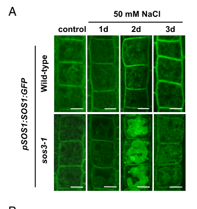

SOS1 (also called NHX7) is a plasma-membrane sodium/proton (Na+/H+) antiporter of the monovalent cation:proton antiporter-1 (CPA1) family. The protein has roughly twelve N-terminal transmembrane helices that form the ion-translocation domain and a large (~700 residue) cytoplasmic C-terminal tail that mediates regulation. SOS1 catalyzes electroneutral exchange of intracellular Na+ (or Li+) for extracellular H+, driven by the inwardly directed proton-motive force established by plasma-membrane H+-ATPases, thereby extruding toxic Na+ from the cytosol to the apoplast. SOS1 is expressed most strongly in root tip epidermal cells and in parenchyma cells at the xylem/symplast boundary of roots, stems and leaves, where it controls the Na+ load of the xylem sap and mediates long-distance Na+ transport between root and shoot. It is the effector of the Salt Overly Sensitive (SOS) signaling pathway, in which the calcium sensor CBL4/SOS3 activates the protein kinase CIPK24/SOS2, which phosphorylates the C-terminal autoinhibitory domain of SOS1 to relieve autoinhibition and activate transport. By exporting Na+ and helping maintain cytosolic ion and pH homeostasis, SOS1 is a principal determinant of plant salt tolerance; its activity also modulates apoplastic pH and reactive-oxygen-species signaling under stress.
Definition: The directed movement of sodium ions from the cytosol to the extracellular space across the plasma membrane, as carried out by a plasma-membrane sodium/proton antiporter.
Justification: The dominant physiological mode of SOS1 is Na+ efflux (export) from the cytosol to the apoplast for detoxification. The existing GOA term GO:0098719 captures Na+ import across the plasma membrane, but no equally specific export term is annotated; an export-directed sodium transport term would more precisely represent the core detoxification function. Not added as a NEW annotation because a verified GO ID for plasma-membrane sodium export could not be confirmed in this session.
Parent term: sodium ion transport
Supporting Evidence:
| GO Term | Evidence | Action | Reason |
|---|---|---|---|
|
GO:0051453
regulation of intracellular pH
|
IBA
GO_REF:0000033 |
KEEP AS NON CORE |
Summary: As an electroneutral Na+/H+ antiporter, SOS1 couples cytosolic Na+ efflux to H+ influx and so influences cytosolic and apoplastic pH. This is a real consequence of antiport activity but is secondary to the core Na+ detoxification role.
Reason: The phylogenetically inferred (IBA) regulation of intracellular pH is consistent with the mechanism of a CPA1-family Na+/H+ exchanger, and SOS1 has been reported to affect H+ transport and apoplastic alkalinization even without salt stress. However, pH regulation is a downstream effect of the antiport reaction rather than the central biological role, which is Na+ detoxification and salt tolerance.
Supporting Evidence:
PMID:17996020
The plasma membrane Na + /H + antiporter SOS1 has also been shown to affect H + transport even in the absence of salt stress
|
|
GO:0098719
sodium ion import across plasma membrane
|
IBA
GO_REF:0000033 |
KEEP AS NON CORE |
Summary: SOS1 transports Na+ across the plasma membrane. Its core physiological mode is Na+ efflux (export) from the cytosol for detoxification; the import direction captured by this term is a secondary, condition-dependent mode (xylem retrieval of Na+ under severe salt stress), reflecting the intrinsic reversibility of the antiporter.
Reason: The IBA term captures plasma-membrane Na+ transport, but specifically in the import direction. The directionality (import vs export) of an electroneutral antiporter depends on the prevailing Na+ and H+ gradients; experimental and modeling work shows SOS1 can both load Na+ into and retrieve Na+ from the xylem. However, the defining, core physiological function of SOS1 is Na+ EXPORT/efflux from the cytosol (and proposed_new_terms request an explicit export term as the missing core function). Na+ import is a secondary, condition-dependent xylem-retrieval mode under severe stress, so this import annotation is retained as non-core rather than as the core sodium-transport function.
Supporting Evidence:
PMID:11884687
SOS1 functions in retrieving Na + from the xylem stream under severe salt stress, whereas under mild salt stress it may function in loading Na + into the xylem.
file:ARATH/SOS1/SOS1-deep-research-falcon.md
consistent with roles in both direct Na+ efflux at the root surface and regulation of long-distance Na+ transport via xylem loading/unloading
|
|
GO:0005886
plasma membrane
|
IEA
GO_REF:0000044 |
ACCEPT |
Summary: SOS1 is a multi-pass plasma-membrane protein, confirmed experimentally by SOS1-GFP confocal imaging in transgenic Arabidopsis.
Reason: The UniProt subcellular-location mapping agrees with direct experimental evidence and with the protein's transmembrane topology. This is the core cellular location of SOS1.
Supporting Evidence:
PMID:11884687
Confocal imaging of a SOS1-green fluorescent protein fusion protein in transgenic Arabidopsis plants indicated that SOS1 is localized in the plasma membrane.
|
|
GO:0006812
monoatomic cation transport
|
IEA
GO_REF:0000002 |
ACCEPT |
Summary: SOS1 transports the monovalent cations Na+ (and Li+) across the plasma membrane. This is a correct but generic parent of the specific sodium-transport annotations.
Reason: InterPro-based generic cation-transport term is accurate; it is broader than the specific sodium transport terms but not misleading, so it is retained.
Supporting Evidence:
PMID:10823923
The transmembrane region of SOS1 has significant sequence similarities to plasma membrane Na + /H + antiporters from bacteria and fungi.
|
|
GO:0015297
antiporter activity
|
IEA
GO_REF:0000002 |
ACCEPT |
Summary: SOS1 is a secondary active antiporter that exchanges Na+ for H+. This generic antiporter term is correct but less informative than the specific sodium:proton antiporter activity.
Reason: The InterPro-derived term is a correct parent of GO:0015385 (sodium:proton antiporter activity); the more specific term is also annotated, so this broader term is acceptable as-is.
Supporting Evidence:
file:ARATH/SOS1/SOS1-uniprot.txt
Acts in electroneutral exchange of protons for cations such as Na(+) or Li(+) across plasma membrane.
|
|
GO:0015385
sodium:proton antiporter activity
|
IEA
GO_REF:0000002 |
ACCEPT |
Summary: This is the core molecular function of SOS1: electroneutral exchange of intracellular Na+ for extracellular H+ across the plasma membrane, verified by a curated catalytic activity (RHEA:29419) and by complementation of a yeast Na+-transport mutant.
Reason: Strong convergent evidence (InterPro/IBA, UniProt catalytic activity, and functional yeast complementation showing Na+-specific transport) supports GO:0015385 as the central molecular function. It is the most informative MF term available and represents the core activity.
Supporting Evidence:
PMID:11884687
SOS1 activity was specific for Na + because the plant protein was inefficient for K + efflux or uptake in vivo
file:ARATH/SOS1/SOS1-uniprot.txt
Acts in electroneutral exchange of protons for cations such as Na(+) or Li(+) across plasma membrane.
file:ARATH/SOS1/SOS1-deep-research-falcon.md
SOS1/NHX7 mediates active Na+ efflux from the cytosol in exchange for H+, lowering cytosolic Na+ during salt stress.
|
|
GO:0016020
membrane
|
IEA
GO_REF:0000002 |
ACCEPT |
Summary: SOS1 is an integral membrane protein with ~12 transmembrane helices. The term is a correct but generic parent of the specific plasma-membrane location.
Reason: InterPro-derived generic membrane localization is accurate; the specific plasma-membrane term is also annotated, so this broader term is retained as-is.
Supporting Evidence:
PMID:10823923
predicted to encode a 127-kDa protein with 12 transmembrane domains in the N-terminal part and a long hydrophilic cytoplasmic tail in the C-terminal part
|
|
GO:0055085
transmembrane transport
|
IEA
GO_REF:0000002 |
ACCEPT |
Summary: SOS1 mediates transmembrane transport of Na+ and H+ across the plasma membrane. Correct but generic parent of the specific sodium/proton transport terms.
Reason: InterPro-based generic transmembrane-transport term is accurate and consistent with the antiporter mechanism; retained as a non-misleading parent.
Supporting Evidence:
file:ARATH/SOS1/SOS1-uniprot.txt
Acts in electroneutral exchange of protons for cations such as Na(+) or Li(+) across plasma membrane.
|
|
GO:1902600
proton transmembrane transport
|
IEA
GO_REF:0000002 |
ACCEPT |
Summary: As a Na+/H+ antiporter, SOS1 translocates H+ across the plasma membrane coupled to Na+ movement. Proton transport is an integral part of the antiport cycle.
Reason: The curated catalytic activity explicitly involves H+ counter-transport (RHEA:29419), so proton transmembrane transport is a correct InterPro-derived annotation, consistent with the electroneutral antiport reaction.
Supporting Evidence:
file:ARATH/SOS1/SOS1-uniprot.txt
Acts in electroneutral exchange of protons for cations such as Na(+) or Li(+) across plasma membrane.
file:ARATH/SOS1/SOS1-deep-research-falcon.md
Transport is driven by the proton electrochemical gradient generated by the plasma-membrane H+-ATPase.
|
|
GO:0005515
protein binding
|
IPI
PMID:17023541 The plasma membrane Na+/H+ antiporter SOS1 interacts with RC... |
REMOVE |
Summary: This IPI annotation records the interaction between the SOS1 cytoplasmic tail and RCD1 (a regulator of oxidative-stress responses). The interaction is biologically meaningful but the generic 'protein binding' term conveys no specific molecular function.
Reason: Per curation guidelines, the uninformative GO:0005515 term should not be retained as it does not describe SOS1 molecular function. The underlying RCD1 interaction is captured biologically by the oxidative-stress process annotations.
Supporting Evidence:
PMID:17023541
SOS1 interacts through its predicted cytoplasmic tail with RCD1, a regulator of oxidative-stress responses.
|
|
GO:0005515
protein binding
|
IPI
PMID:21262798 Activation of the plasma membrane Na/H antiporter Salt-Overl... |
REMOVE |
Summary: This IPI annotation records interaction with CIPK24/SOS2, the kinase that phosphorylates and activates SOS1. Biologically important for regulation, but the generic 'protein binding' term is uninformative about molecular function.
Reason: The generic protein-binding term should not be kept. The functionally relevant SOS2-SOS3 regulatory interaction is described by the protein's regulation and phosphorylation, and a kinase-binding/regulatory relationship is better captured elsewhere than by bare GO:0005515.
Supporting Evidence:
PMID:21262798
SOS1 is relieved from auto-inhibition upon phosphorylation of the auto-inhibitory domain by SOS2-SOS3.
|
|
GO:0015386
potassium:proton antiporter activity
|
EXP
PMID:12239394 SOS1, a Genetic Locus Essential for Salt Tolerance and Potas... |
MARK AS OVER ANNOTATED |
Summary: A K+/H+ catalytic activity is curated for SOS1, but direct functional testing in yeast showed SOS1 is specific for Na+ and inefficient at K+ transport in vivo. The sos1 potassium-acquisition phenotype is an indirect, genetic consequence of disrupted Na+/H+ exchange and linked Na+/K+ exchange at the xylem/symplast boundary, not direct K+ transport by SOS1.
Reason: PMID:12239394 (Wu et al. 1996) is a genetic-mapping study reporting that sos1 mutants are defective in high-affinity K+ uptake; it does not directly demonstrate SOS1-catalyzed K+/H+ antiport. Direct transport assays (PMID:11884687) show SOS1 is Na+-specific and inefficient for K+, and the K+ phenotype is best explained by coupled antiport activities at the xylem/symplast boundary. The K+/H+ antiporter MF therefore over-annotates the protein's intrinsic activity.
Supporting Evidence:
PMID:11884687
SOS1 activity was specific for Na + because the plant protein was inefficient for K + efflux or uptake in vivo
PMID:12239394
sos1 mutants are defective in high-affinity potassium uptake
|
|
GO:0005886
plasma membrane
|
HDA
PMID:14506206 Large-scale analysis of in vivo phosphorylated membrane prot... |
ACCEPT |
Summary: A large-scale plasma-membrane phosphoproteomics study identified SOS1 among plasma-membrane phosphoproteins, consistent with its plasma-membrane localization and its regulation by phosphorylation.
Reason: High-throughput direct-assay evidence places SOS1 in the plasma membrane, in full agreement with experimental GFP localization and the protein's topology. Core location.
Supporting Evidence:
PMID:14506206
identification of plasma membrane phosphoproteins of Arabidopsis
|
|
GO:0009941
chloroplast envelope
|
HDA
PMID:12938931 Proteomic study of the Arabidopsis thaliana chloroplastic en... |
REMOVE |
Summary: A single large-scale proteomic survey of a 'mixed' chloroplast envelope preparation listed SOS1 among 392 nonredundant proteins. This is inconsistent with the well-established plasma-membrane localization and biology of SOS1 and most likely reflects plasma-membrane contamination of the envelope fraction.
Reason: The chloroplast-envelope assignment comes from an untargeted proteomics dataset prone to contamination, with no functional rationale; SOS1 has no role in chloroplast biology and is robustly localized to the plasma membrane by GFP imaging and topology. This annotation is judged incorrect.
Supporting Evidence:
PMID:12938931
"mixed" envelopes were subsequently isolated using sucrose step gradients
PMID:11884687
Confocal imaging of a SOS1-green fluorescent protein fusion protein in transgenic Arabidopsis plants indicated that SOS1 is localized in the plasma membrane.
|
|
GO:0005886
plasma membrane
|
ISM
GO_REF:0000122 |
ACCEPT |
Summary: Sequence-based (AtSubP) prediction of plasma-membrane localization, consistent with experimental evidence and topology.
Reason: The predicted plasma-membrane location agrees with multiple lines of experimental evidence (GFP imaging, phosphoproteomics) and the multi-pass topology. Core location.
Supporting Evidence:
PMID:11884687
Confocal imaging of a SOS1-green fluorescent protein fusion protein in transgenic Arabidopsis plants indicated that SOS1 is localized in the plasma membrane.
|
|
GO:0071805
potassium ion transmembrane transport
|
IMP
PMID:12239394 SOS1, a Genetic Locus Essential for Salt Tolerance and Potas... |
KEEP AS NON CORE |
Summary: sos1 mutants are defective in high-affinity K+ uptake and become K+-deficient under NaCl, but SOS1 does not directly transport K+; this is an indirect consequence of disrupted Na+/H+ exchange and the tight coupling of Na+ and K+ fluxes at the xylem/symplast boundary.
Reason: The acts_upstream_of_or_within qualifier appropriately reflects an indirect genetic effect on K+ transport rather than direct catalysis. Direct assays show SOS1 is Na+-specific (PMID:11884687), so this should not be treated as a core function but is retained as a genuine, non-core physiological phenotype.
Supporting Evidence:
PMID:12239394
sos1 mutants are defective in high-affinity potassium uptake
PMID:11884687
the proposed coupling between Na + and K + exchange at the xylem/symplast boundary also could provide an explanation for why sos1 mutant plants are not capable of growing on low K + culture medium
|
|
GO:2000377
regulation of reactive oxygen species metabolic process
|
IMP
PMID:17023541 The plasma membrane Na+/H+ antiporter SOS1 interacts with RC... |
KEEP AS NON CORE |
Summary: Through interaction of its cytoplasmic tail with RCD1 and effects on apoplastic pH/NADPH-oxidase activity, SOS1 influences ROS-related gene expression and ROS accumulation under stress. This is a secondary regulatory role distinct from ion transport.
Reason: Experimental genetic evidence supports a role for SOS1 in modulating ROS metabolism (sos1 mutants over-accumulate ROS under salt; SOS1 and RCD1 jointly control ROS-scavenging genes), but this is downstream of and secondary to the core Na+/H+ antiport function.
Supporting Evidence:
PMID:17023541
Several genes related to oxidative-stress tolerance were found to be regulated by both RCD1 and SOS1.
|
|
GO:0000302
response to reactive oxygen species
|
IEP
PMID:17996020 Reactive oxygen species mediate Na+-induced SOS1 mRNA stabil... |
KEEP AS NON CORE |
Summary: SOS1 mRNA is stabilized by ROS (H2O2) and SOS1 activity feeds back into apoplastic ROS production via pH changes and NADPH oxidase, linking SOS1 to the ROS response. A secondary, signaling-level role.
Reason: Expression/phenotype evidence supports involvement of SOS1 in ROS responses, but this is an indirect signaling role downstream of its transport activity rather than a core function.
Supporting Evidence:
PMID:17996020
Stress-induced SOS1 mRNA stability is mediated by reactive oxygen species (ROS).
|
|
GO:0006979
response to oxidative stress
|
IMP
PMID:17996020 Reactive oxygen species mediate Na+-induced SOS1 mRNA stabil... |
KEEP AS NON CORE |
Summary: sos1 mutants show altered oxidative-stress sensitivity (more tolerant to paraquat/methyl viologen), indicating SOS1 participates in oxidative-stress responses, with a proposed negative role mediated by apoplastic pH and NADPH oxidase.
Reason: Mutant-phenotype evidence supports involvement in oxidative-stress responses, but as an indirect, secondary effect of SOS1 antiport activity on apoplastic pH and ROS production, not a core function.
Supporting Evidence:
PMID:17996020
mutations in the SOS1 gene render sos1 mutants more tolerant to paraquat, a non-selective herbicide causing oxidative stress, indicating that SOS1 plays negative roles in tolerance of oxidative stress
|
|
GO:0009651
response to salt stress
|
IEP
PMID:17996020 Reactive oxygen species mediate Na+-induced SOS1 mRNA stabil... |
ACCEPT |
Summary: SOS1 is a salt-tolerance determinant; its mRNA is stabilized under salt stress and the protein extrudes toxic Na+, making salt-stress response a core biological process for SOS1.
Reason: Multiple independent lines of evidence (expression induction by Na+, severe salt hypersensitivity of sos1 mutants, Na+ efflux activity) establish response to salt stress as a core process of SOS1.
Supporting Evidence:
PMID:17996020
Salt Overly Sensitive 1 (SOS1), a plasma membrane Na+/H+ antiporter in Arabidopsis, is a salt tolerance determinant crucial for the maintenance of ion homeostasis in saline stress conditions.
|
|
GO:0042542
response to hydrogen peroxide
|
IEP
PMID:17996020 Reactive oxygen species mediate Na+-induced SOS1 mRNA stabil... |
KEEP AS NON CORE |
Summary: H2O2 treatment increases SOS1 mRNA stability, and SOS1 activity affects apoplastic H2O2 production, linking SOS1 to the hydrogen-peroxide response as a secondary signaling role.
Reason: Expression evidence supports a connection between SOS1 and H2O2 responses, but this is downstream signaling/ROS biology, secondary to the core ion-transport function.
Supporting Evidence:
PMID:17996020
H2O2 treatment increases the stability of SOS1 mRNA.
|
|
GO:0005886
plasma membrane
|
IDA
PMID:10823923 The Arabidopsis thaliana salt tolerance gene SOS1 encodes a ... |
ACCEPT |
Summary: Direct experimental evidence (TAIR IDA) supports plasma-membrane localization, consistent with the predicted multi-pass topology and similarity to bacterial/fungal plasma-membrane Na+/H+ antiporters.
Reason: Direct-assay plasma-membrane localization agrees with all other location evidence; core cellular location of SOS1.
Supporting Evidence:
PMID:10823923
Phylogenetic analysis showed that SOS1 is more closely related to plasma membrane Na + /H + antiporters from microorganisms than to the vacuolar antiporters
|
|
GO:0042542
response to hydrogen peroxide
|
IMP
PMID:17023541 The plasma membrane Na+/H+ antiporter SOS1 interacts with RC... |
KEEP AS NON CORE |
Summary: sos1 mutants show altered sensitivity to H2O2/apoplastic ROS, supporting involvement of SOS1 in the hydrogen-peroxide response via its role in oxidative-stress tolerance with RCD1.
Reason: Mutant-phenotype evidence supports involvement in H2O2 responses, but as a secondary, indirect role downstream of SOS1 antiport activity and the SOS1-RCD1 module, not a core function.
Supporting Evidence:
PMID:17023541
Like rcd1 mutants, sos1 mutant plants show an altered sensitivity to oxidative stresses.
|
|
GO:0005886
plasma membrane
|
IDA
PMID:11884687 The putative plasma membrane Na(+)/H(+) antiporter SOS1 cont... |
ACCEPT |
Summary: Direct experimental localization by SOS1-GFP confocal imaging in transgenic Arabidopsis demonstrates plasma-membrane localization.
Reason: This is the strongest direct evidence for the core plasma-membrane location of SOS1.
Supporting Evidence:
PMID:11884687
Confocal imaging of a SOS1-green fluorescent protein fusion protein in transgenic Arabidopsis plants indicated that SOS1 is localized in the plasma membrane.
file:ARATH/SOS1/SOS1-deep-research-falcon.md
SOS1:GFP becomes increasingly recruited to the plasma membrane over
|
|
GO:0006814
sodium ion transport
|
IMP
PMID:11874577 Salt causes ion disequilibrium-induced programmed cell death... |
ACCEPT |
Summary: SOS1 mediates Na+ transport across the plasma membrane and is required to limit cytosolic Na+ accumulation; sodium ion transport is a core process for this antiporter.
Reason: Although PMID:11874577 uses the sos1 mutant only as a salt-sensitive genetic background (salt-induced programmed cell death), sodium ion transport is firmly established as a core SOS1 function by direct transport assays (PMID:11884687) and UniProt. The annotation is correct; supporting evidence is drawn from the directly relevant transport literature.
Supporting Evidence:
PMID:11884687
SOS1 is a plasma membrane Na + transporter essential for controlling long-distance Na + movement in plants.
file:ARATH/SOS1/SOS1-deep-research-falcon.md
SOS1/NHX7 mediates active Na+ efflux from the cytosol in exchange for H+, lowering cytosolic Na+ during salt stress.
PMID:11874577
salt-sensitive mutants of yeast (cnb1Delta) and Arabidopsis (sos1) exhibit substantially more profound PCD symptoms, indicating that salt-induced PCD is mediated by ion disequilibrium
|
|
GO:0009651
response to salt stress
|
IMP
PMID:12239394 SOS1, a Genetic Locus Essential for Salt Tolerance and Potas... |
ACCEPT |
Summary: sos1 mutants are >20-fold more sensitive to NaCl, establishing SOS1 as essential for the response to salt stress.
Reason: Loss-of-function mutant phenotype (extreme NaCl hypersensitivity) directly supports the core role of SOS1 in salt-stress response.
Supporting Evidence:
PMID:12239394
their growth was >20 times more sensitive to inhibition by NaCl
file:ARATH/SOS1/SOS1-deep-research-falcon.md
Loss-of-function sos mutants (sos1, sos2, sos3) exhibit strong salt sensitivity, supporting the conclusion that the SOS pathway is essential for salt tolerance through ion homeostasis maintenance
|
|
GO:0009651
response to salt stress
|
IMP
PMID:10823923 The Arabidopsis thaliana salt tolerance gene SOS1 encodes a ... |
ACCEPT |
Summary: The SOS1 locus is essential for salt tolerance; sos1 mutations render plants extremely sensitive to high Na+ and SOS1 expression is induced by NaCl. Core biological process.
Reason: Cloning and mutant analysis establish SOS1 as required for the salt-stress response, a core function. Duplicate IMP support across independent studies is appropriate.
Supporting Evidence:
PMID:10823923
sos1 mutations render plants more sensitive to growth inhibition by high Na + and low K + environments
|
Q: Is the apparent K+/H+ antiporter activity (GO:0015386) an intrinsic biochemical property of SOS1 or entirely an indirect consequence of coupled Na+/K+ fluxes at the xylem/symplast boundary?
Q: Does SOS1 directly bind 14-3-3 proteins at the SOS2-phosphorylated RIDSPSK motif, as for the related plasma-membrane H+-ATPase, and does this modulate activation?
The research report should be a detailed narrative explaining the function, biological processes, and localization of the gene product. Citations should be given for all claims.
You should prioritize authoritative reviews and primary scientific literature when conducting research. You can supplement
this with annotations you find in gene/protein databases, but these can be outdated or inaccurate.
We are specifically interested in the primary function of the gene - for enzymes, what reaction is catalyzed, and what is the substrate specificity? For transporters, what is the substrate? For structural proteins or adapters, what is the broader structural role? For signaling molecules, what is the role in the pathway.
We are interested in where in or outside the cell the gene product carries out its function.
We are also interested in the signaling or biochemical pathways in which the gene functions. We are less interested in broad pleiotropic effects, except where these elucidate the precise role.
Include evidence where possible. We are interested in both experimental evidence as well as inference from structure, evolution, or bioinformatic analysis. Precise studies should be prioritized over high-throughput, where available.
The UniProt accession Q9LKW9 corresponds to Arabidopsis thaliana gene NHX7, synonymous with SALT OVERLY SENSITIVE 1 (SOS1) and locus At2g01980. The literature retrieved here consistently describes this protein as a plasma-membrane Na+/H+ antiporter (CPA1 family) with a large cytosolic C-terminal regulatory tail, matching the UniProt description and domain architecture (xie2022structurefunctionand pages 2-3, xie2022structurefunctionand pages 3-5).
SOS1 (NHX7) is the principal plasma membrane (PM) Na+/H+ antiporter in Arabidopsis that supports salt tolerance by exporting Na+ from the cytosol to the apoplast/extracellular space in exchange for H+ (xie2022structurefunctionand pages 2-3, zhang2025salinitysurvivalmolecular pages 5-6). This exchanger is considered the terminal effector of the canonical SOS (Salt Overly Sensitive) pathway, which links salt-induced Ca2+ signals to Na+ extrusion (zhang2025salinitysurvivalmolecular pages 6-7, xie2022structurefunctionand pages 5-6).
The SOS1 antiport reaction is energetically coupled to the H+ electrochemical gradient generated by the PM H+-ATPase; thus, Na+ export via SOS1 is ultimately powered by ATP hydrolysis through the pump (xie2022structurefunctionand pages 2-3). Conceptually, this is a secondary-active transport process: Na+ efflux is driven by H+ influx down its electrochemical potential (xie2022structurefunctionand pages 2-3, zhang2025salinitysurvivalmolecular pages 5-6).
The core SOS pathway is typically defined as:
- SOS3/CBL4 (a Ca2+-binding sensor) detects salt-triggered Ca2+ transients and recruits/activates
- SOS2/CIPK24 (a SnRK3/CIPK protein kinase), which phosphorylates
- SOS1/NHX7, relieving autoinhibition and increasing Na+/H+ exchange activity (xie2022structurefunctionand pages 6-8, zhang2025salinitysurvivalmolecular pages 6-7, li2023howdoplants pages 10-10).
Primary substrate: Na+ (export) coupled to H+ (import). SOS1 activity is described as Na+ efflux to reduce cytosolic Na+ under salinity (xie2022structurefunctionand pages 2-3, zhang2025salinitysurvivalmolecular pages 5-6).
SOS1 is a large membrane protein (reported as ~1,146 amino acids) with an N-terminal multi-pass transmembrane transport domain and a long cytosolic C-terminal regulatory region (xie2022structurefunctionand pages 3-5). The C-terminal tail contains regulatory segments (including CNBD-like motifs and inhibitory regions) that participate in autoinhibition and activation (xie2022structurefunctionand pages 3-5, zhang2025salinitysurvivalmolecular pages 5-6).
A central regulatory concept is that SOS1 is maintained in a self-inhibited state via its C-terminal tail and becomes activated by phosphorylation during salt stress (xie2022structurefunctionand pages 5-6, xie2022structurefunctionand pages 6-8).
Specific residue-level evidence summarized in a 2022 SOS1-focused review:
- SOS2/CIPK24 phosphorylates SOS1 at conserved serines Ser1136/Ser1138 in the self-inhibitory C-terminal region, which relieves autoinhibition and activates Na+ export (xie2022structurefunctionand pages 6-8).
- Mutational evidence (as summarized in the review) indicates Ser→Ala substitutions reduce salt tolerance, while phosphomimic substitutions can enhance SOS2 interaction (xie2022structurefunctionand pages 6-8).
Salt stress increases cytosolic Ca2+; Ca2+ sensor proteins SOS3/CBL4 and SCaBP8/CBL10 bind and recruit SOS2 to the PM, promoting downstream SOS1 activation by phosphorylation (xie2022structurefunctionand pages 5-6, zhang2025salinitysurvivalmolecular pages 6-7).
A 2025 synthesis (reviewing Arabidopsis work) further supports tissue/organ specialization: the SOS2–SOS3 module acts mainly in roots, while SOS2–SCaBP8/CBL10 is emphasized in shoots (zhang2025salinitysurvivalmolecular pages 6-7).
A key 2024 primary study (PNAS; publication month Feb 2024) provides mechanistic evidence that SOS3 does not only activate SOS2, but also directly binds SOS1 and controls its localization/stability at the plasma membrane under salt stress (gamezarjona2024inverseregulationof pages 1-2, gamezarjona2024inverseregulationof pages 3-4).
Key findings include:
- SOS3 binds a mapped SOS3-binding domain (S3BD) in SOS1 (K460–L482). Deleting this domain (SOS1ΔS3BD) abolishes SOS3 binding and fails to complement sos1-1 in planta (gamezarjona2024inverseregulationof pages 2-3).
- Confocal imaging shows that under 50 mM NaCl, SOS1:GFP becomes increasingly recruited to the plasma membrane over 1–3 days in roots with functional SOS3; in sos3 mutants, SOS1:GFP redistributes to intracellular compartments and ultimately vacuolar localization after ~2 days (gamezarjona2024inverseregulationof pages 3-4, gamezarjona2024inverseregulationof pages 5-6).
- Imaging quantification in this study reports evaluation of ≥70 cells and ≥7 plants (gamezarjona2024inverseregulationof pages 5-6).
This work proposes SOS3 as a Ca2+-sensor “molecular switch” that simultaneously promotes SOS1 PM recruitment/activation while triggering degradation of HKT1;1 (a major xylem Na+ unloading system), thus shifting vascular Na+ handling under acute salinity (gamezarjona2024inverseregulationof pages 1-2, gamezarjona2024inverseregulationof pages 5-6).
SOS1 localizes to the plasma membrane, consistent with its function in Na+ extrusion to the extracellular space (xie2022structurefunctionand pages 2-3, xie2022structurefunctionand pages 5-6).
The 2024 PNAS study adds that SOS1’s PM localization is dynamic and salt-inducible, and is strongly SOS3-dependent in roots under 50 mM NaCl (gamezarjona2024inverseregulationof pages 3-4, gamezarjona2024inverseregulationof pages 5-6).
SOS1 expression/localization is repeatedly associated with root epidermis and xylem-associated parenchyma, consistent with roles in both direct Na+ efflux at the root surface and regulation of long-distance Na+ transport via xylem loading/unloading (xie2022structurefunctionand pages 5-6, ferrandi2023investigatingthemolecular pages 30-33).
Loss-of-function sos mutants (sos1, sos2, sos3) exhibit strong salt sensitivity, supporting the conclusion that the SOS pathway is essential for salt tolerance through ion homeostasis maintenance (zhang2025salinitysurvivalmolecular pages 6-7, xie2022structurefunctionand pages 5-6).
Evidence summarized in the 2022 review indicates that the effect of SOS1 on shoot Na+ accumulation is stress-dependent: under 100 mM NaCl, shoots of sos1 mutants accumulated significantly more Na+ than wild type, whereas under milder conditions some studies report altered (including reduced) shoot Na+ (xie2022structurefunctionand pages 5-6). This supports a dual role in root Na+ exclusion and vascular Na+ management.
SOS1-mediated Na+ efflux is functionally coordinated with other salt tolerance systems, such as vacuolar compartmentation (e.g., NHX1) and xylem Na+ transport/unloading systems (HKT1), to balance cytosolic Na+ toxicity with osmotic adjustment (xie2022structurefunctionand pages 8-9).
The 2024 PNAS paper gives a concrete mechanistic coupling between SOS1 and HKT1 at the protein regulation level: SOS3 promotes SOS1 PM recruitment while directing HKT1;1 proteasomal degradation under salt/high Ca2+ (gamezarjona2024inverseregulationof pages 1-2, gamezarjona2024inverseregulationof pages 5-6).
A 2023 Frontiers in Plant Science review frames SOS1 as a central actor in plant ion and pH homeostasis under saline-alkali stress and highlights SOS2–CBL partnerships (including SCaBP8/CBL10) as key regulatory modules for SOS1 activation (Oct 2023; URL in citation) (li2023howdoplants pages 10-10).
The most substantial new mechanistic evidence in the retrieved 2023–2024 corpus is the PNAS 2024 finding that SOS3 directly governs SOS1 plasma-membrane recruitment (beyond SOS2 activation) and inversely regulates HKT1;1 stability, shifting vascular Na+ flux under acute salinity (gamezarjona2024inverseregulationof pages 1-2, gamezarjona2024inverseregulationof pages 5-6).
Quantitative/operational details reported include:
- SOS1:GFP PM recruitment assay condition: 50 mM NaCl for 1–3 days (gamezarjona2024inverseregulationof pages 5-6).
- HKT1 degradation is proteasome-dependent and prevented by MG132, with degradation observed over 24 h of salt treatment; a similar response is triggered by 3 mM CaCl2 and requires SOS3 (gamezarjona2024inverseregulationof pages 5-6).
The 2024 PNAS paper cites that a cryo-EM structure of SOS1 is consistent with current models for the pore domain and C-terminal regulatory topology, but the primary cryo-EM structure paper itself was not available in retrieved full text (gamezarjona2024inverseregulationof pages 2-3). Consequently, the report here does not reproduce cryo-EM-derived quantitative structural metrics.
Across plant stress biology, SOS1 ortholog manipulation (overexpression/allele mining) is widely treated as a plausible strategy to improve salt tolerance by enhancing Na+ exclusion capacity. Reviews of SOS1 emphasize feasibility of genetic improvement strategies that target the SOS network and ion transport components (xie2022structurefunctionand pages 12-13, xie2022structurefunctionand pages 6-8).
The 2024 SOS3-dependent mechanism implies that engineering SOS1 activity alone may be insufficient if proper PM recruitment and stability are limiting. The SOS3–SOS1 interaction domain (S3BD K460–L482) and the regulatory axis coordinating SOS1 vs HKT1 suggest concrete intervention points for tuning root Na+ retention vs shoot delivery dynamics under different salinity regimes (gamezarjona2024inverseregulationof pages 2-3, gamezarjona2024inverseregulationof pages 1-2).
The retrieved full texts contain several explicit quantitative conditions and measured/quantified elements relevant to functional annotation:
- Salt treatment regimes linked to SOS1 phenotypes/ion outcomes: 25 mM vs 100 mM NaCl were discussed as contrasting regimes associated with different shoot Na+ accumulation behavior in sos1 mutants vs wild type (ferrandi2023investigatingthemolecular pages 30-33, xie2022structurefunctionand pages 5-6).
- Dynamic localization experiment (2024): SOS1:GFP PM recruitment in root epidermal cells after 50 mM NaCl for 1–3 days; imaging quantified over ≥70 cells and ≥7 plants (gamezarjona2024inverseregulationof pages 5-6).
- Protein degradation assay (2024): HKT1 abundance decreases over 24 h salt treatment and is blocked by MG132 (proteasome inhibitor); 3 mM CaCl2 induces similar degradation; genetic evidence indicates requirement for SOS3 but not SOS1/SOS2 (gamezarjona2024inverseregulationof pages 5-6).
The following table provides a compact link between major annotation claims and the primary evidence/reviews supporting them.
| Aspect | Key findings | Evidence type/assays | Key citations with year & URL |
|---|---|---|---|
| Identity verified | Arabidopsis thaliana NHX7 is the same protein as SOS1/At2g01980 (UniProt Q9LKW9), a plasma-membrane Na+/H+ antiporter in the CPA1 family with a long regulatory C-terminus; this distinguishes it from vacuolar NHX proteins and similarly named genes in other species. | Gene cloning/annotation synthesis; comparative structural/domain analysis | Xie et al., 2022, Front Plant Sci, https://doi.org/10.3389/fpls.2022.866265 (xie2022structurefunctionand pages 2-3, xie2022structurefunctionand pages 3-5) |
| Transport function and coupling | SOS1/NHX7 mediates active Na+ efflux from the cytosol in exchange for H+, lowering cytosolic Na+ during salt stress. Transport is driven by the proton electrochemical gradient generated by the plasma-membrane H+-ATPase. | Genetics, heterologous yeast complementation, pathway reconstitution, physiological transport analyses | Xie et al., 2022, https://doi.org/10.3389/fpls.2022.866265; Zhang et al., 2025 review summarizing Arabidopsis work, https://doi.org/10.3389/fpls.2025.1527952 (xie2022structurefunctionand pages 2-3, zhang2025salinitysurvivalmolecular pages 5-6) |
| Localization and expression domains | SOS1 is plasma-membrane localized and strongly associated with root epidermis and xylem-associated parenchyma; expression is also reported in stems and leaves and is induced by salt stress. | GFP localization, promoter-GUS, expression analyses, mutant phenotypes | Xie et al., 2022, https://doi.org/10.3389/fpls.2022.866265; Ferrandi, 2023 summary of Arabidopsis literature (unknown journal) (xie2022structurefunctionand pages 5-6, ferrandi2023investigatingthemolecular pages 30-33) |
| Physiological role in salt tolerance | sos1 loss-of-function mutants are highly salt sensitive. SOS1 supports root Na+ extrusion and contributes to long-distance Na+ transport/xylem ion handling, with context-dependent effects on shoot Na+ accumulation under mild versus severe salinity. | Mutant phenotyping, shoot/root ion measurements, xylem sap analyses | Xie et al., 2022, https://doi.org/10.3389/fpls.2022.866265; Ferrandi, 2023 summary (xie2022structurefunctionand pages 5-6, ferrandi2023investigatingthemolecular pages 30-33) |
| Core SOS pathway: SOS3/CBL4 → SOS2/CIPK24 → SOS1 | Salt-induced cytosolic Ca2+ is sensed by SOS3/CBL4, which recruits/activates SOS2/CIPK24 at the plasma membrane; SOS2 then phosphorylates the C-terminal inhibitory region of SOS1 to activate Na+ export. | Genetic epistasis, kinase-substrate studies, protein interaction assays, yeast reconstitution | Xie et al., 2022, https://doi.org/10.3389/fpls.2022.866265; Li & Yang, 2023, https://doi.org/10.3389/fpls.2023.1217193; Zhang et al., 2025, https://doi.org/10.3389/fpls.2025.1527952 (xie2022structurefunctionand pages 6-8, li2023howdoplants pages 10-10, zhang2025salinitysurvivalmolecular pages 6-7) |
| CBL10/SCaBP8 branch | SCaBP8/CBL10 also binds SOS2 and recruits it to the plasma membrane, functioning especially in shoots; recent reviews further note that SCaBP8 relieves inhibition of SOS1 by repressing PP2C.D phosphatases. | Protein interaction, phosphorylation studies, review synthesis of recent Arabidopsis work | Zhang et al., 2025, https://doi.org/10.3389/fpls.2025.1527952; Li & Yang, 2023, https://doi.org/10.3389/fpls.2023.1217193; Fu & Yang, 2023, https://doi.org/10.3390/cimb45070374 (zhang2025salinitysurvivalmolecular pages 6-7, li2023howdoplants pages 10-10) |
| Regulatory domains/residues: S3BD | A SOS3-binding domain (S3BD) in SOS1 was mapped to K460-L482. SOS3 binds this region directly; deleting S3BD abolishes SOS3 binding and prevents complementation of sos1-1 in planta, although basal transporter activity can increase in yeast. | BiFC, co-IP, fluorescence titration, structure-guided modeling, yeast complementation, plant complementation | Gámez-Arjona et al., 2024, PNAS, https://doi.org/10.1073/pnas.2320657121 (gamezarjona2024inverseregulationof pages 2-3, gamezarjona2024inverseregulationof pages 3-4, gamezarjona2024inverseregulationof pages 4-5) |
| Regulatory domains/residues: autoinhibitory region | The C-terminal autoinhibitory region around L1005-L1047 keeps SOS1 inactive under non-stress conditions; deletion of the C-terminus causes constitutive activation. | Domain deletion/mutagenesis, heterologous functional assays, structural modeling/review synthesis | Gámez-Arjona et al., 2024, https://doi.org/10.1073/pnas.2320657121; Xie et al., 2022, https://doi.org/10.3389/fpls.2022.866265 (gamezarjona2024inverseregulationof pages 2-3, xie2022structurefunctionand pages 6-8) |
| Regulatory phosphorylation sites | SOS2/CIPK24 phosphorylates conserved serines S1136/S1138 in the self-inhibitory domain, relieving autoinhibition and activating SOS1; Ser→Ala substitutions reduce salt tolerance, while phosphomimic mutations increase SOS2 binding. | Site-directed mutagenesis, kinase regulation studies, salt-tolerance assays | Xie et al., 2022, https://doi.org/10.3389/fpls.2022.866265 (xie2022structurefunctionand pages 6-8) |
| 2024 PNAS: SOS3-dependent PM recruitment of SOS1 | Under 50 mM NaCl, SOS1:GFP is recruited to the plasma membrane over 1-3 days in wild-type roots, but in sos3 mutants it redistributes to intracellular compartments/vacuoles. Imaging was quantified from at least 70 cells and at least 7 plants. | Confocal microscopy of SOS1:GFP in roots under salt treatment | Gámez-Arjona et al., 2024, PNAS, https://doi.org/10.1073/pnas.2320657121 (gamezarjona2024inverseregulationof pages 3-4, gamezarjona2024inverseregulationof pages 5-6, gamezarjona2024inverseregulationof media a48c6807) |
| 2024 PNAS: inverse regulation of HKT1;1 | SOS3 also binds HKT1;1 and promotes its salt- and Ca2+-dependent proteasomal degradation, shifting Na+ handling away from root retention toward SOS1-mediated efflux/xylem loading under acute salinity. Coexpression of SOS3 did not alter HKT1;1 currents in oocytes, supporting regulation via localization/stability rather than channel gating. | BiFC, co-IP, degradation assays, Xenopus oocyte electrophysiology | Gámez-Arjona et al., 2024, PNAS, https://doi.org/10.1073/pnas.2320657121 (gamezarjona2024inverseregulationof pages 4-5, gamezarjona2024inverseregulationof pages 5-6) |
| 2024 PNAS: MG132 evidence | HKT1;1 protein abundance declines over 24 h of salt treatment, and this degradation is blocked by the 26S proteasome inhibitor MG132; similar effects are induced by 3 mM CaCl2, and the degradation response is absent in sos3-1. | Immunoblot/protein stability assays with MG132 and Ca2+ treatments | Gámez-Arjona et al., 2024, PNAS, https://doi.org/10.1073/pnas.2320657121 (gamezarjona2024inverseregulationof pages 5-6, gamezarjona2024inverseregulationof media f2745787) |
| Structural state of the field | Recent Arabidopsis work cites a cryo-EM structure of SOS1 consistent with the topology of the pore domain and C-terminal autoinhibitory/helical-cytosolic regions, strengthening current models of activation, though the detailed structural paper itself was not directly available in retrieved full text. | Structure-guided interpretation cited by recent primary literature | Gámez-Arjona et al., 2024, https://doi.org/10.1073/pnas.2320657121 (gamezarjona2024inverseregulationof pages 2-3) |
Table: This table summarizes verified identity, transport function, localization, regulation, and recent 2024 mechanistic findings for Arabidopsis SOS1/NHX7. It is useful as a compact evidence map linking each major claim to the assays and citations supporting it.
Some highly relevant 2023 primary structural/regulatory papers (including a Nature Plants 2023 study on the structural basis of Arabidopsis SOS1 regulation, and a Plant Cell 2023 study on PP2C.D6/D7 inhibition of SOS1) were identified by search but were not obtainable as full text in this run; therefore, this report restricts detailed claims to the retrieved full-text evidence above (gamezarjona2024inverseregulationof pages 2-3, zhang2025salinitysurvivalmolecular pages 6-7).
References
(xie2022structurefunctionand pages 2-3): Qing Xie, Yang Zhou, and Xingyu Jiang. Structure, function, and regulation of the plasma membrane na+/h+ antiporter salt overly sensitive 1 in plants. Frontiers in Plant Science, Mar 2022. URL: https://doi.org/10.3389/fpls.2022.866265, doi:10.3389/fpls.2022.866265. This article has 80 citations.
(xie2022structurefunctionand pages 3-5): Qing Xie, Yang Zhou, and Xingyu Jiang. Structure, function, and regulation of the plasma membrane na+/h+ antiporter salt overly sensitive 1 in plants. Frontiers in Plant Science, Mar 2022. URL: https://doi.org/10.3389/fpls.2022.866265, doi:10.3389/fpls.2022.866265. This article has 80 citations.
(zhang2025salinitysurvivalmolecular pages 5-6): Huankai Zhang, Caiyu Yu, Qian Zhang, Zihan Qiu, Xiansheng Zhang, Yifeng Hou, and Jie Zang. Salinity survival: molecular mechanisms and adaptive strategies in plants. Frontiers in Plant Science, Feb 2025. URL: https://doi.org/10.3389/fpls.2025.1527952, doi:10.3389/fpls.2025.1527952. This article has 42 citations.
(zhang2025salinitysurvivalmolecular pages 6-7): Huankai Zhang, Caiyu Yu, Qian Zhang, Zihan Qiu, Xiansheng Zhang, Yifeng Hou, and Jie Zang. Salinity survival: molecular mechanisms and adaptive strategies in plants. Frontiers in Plant Science, Feb 2025. URL: https://doi.org/10.3389/fpls.2025.1527952, doi:10.3389/fpls.2025.1527952. This article has 42 citations.
(xie2022structurefunctionand pages 5-6): Qing Xie, Yang Zhou, and Xingyu Jiang. Structure, function, and regulation of the plasma membrane na+/h+ antiporter salt overly sensitive 1 in plants. Frontiers in Plant Science, Mar 2022. URL: https://doi.org/10.3389/fpls.2022.866265, doi:10.3389/fpls.2022.866265. This article has 80 citations.
(xie2022structurefunctionand pages 6-8): Qing Xie, Yang Zhou, and Xingyu Jiang. Structure, function, and regulation of the plasma membrane na+/h+ antiporter salt overly sensitive 1 in plants. Frontiers in Plant Science, Mar 2022. URL: https://doi.org/10.3389/fpls.2022.866265, doi:10.3389/fpls.2022.866265. This article has 80 citations.
(li2023howdoplants pages 10-10): Jing Li and Yongqing Yang. How do plants maintain ph and ion homeostasis under saline-alkali stress? Frontiers in Plant Science, Oct 2023. URL: https://doi.org/10.3389/fpls.2023.1217193, doi:10.3389/fpls.2023.1217193. This article has 85 citations.
(gamezarjona2024inverseregulationof pages 1-2): Francisco Gámez-Arjona, Hee Jin Park, Elena García, Rashid Aman, Irene Villalta, Natalia Raddatz, Raul Carranco, Akhtar Ali, Zahir Ali, Shah Zareen, Anna De Luca, Eduardo O. Leidi, Miguel Daniel-Mozo, Zheng-Yi Xu, Armando Albert, Woe-Yeon Kim, Jose M. Pardo, Clara Sánchez-Rodriguez, Dae-Jin Yun, and Francisco J. Quintero. Inverse regulation of sos1 and hkt1 protein localization and stability by sos3/cbl4 in arabidopsis thaliana. Proceedings of the National Academy of Sciences of the United States of America, Feb 2024. URL: https://doi.org/10.1073/pnas.2320657121, doi:10.1073/pnas.2320657121. This article has 42 citations and is from a highest quality peer-reviewed journal.
(gamezarjona2024inverseregulationof pages 3-4): Francisco Gámez-Arjona, Hee Jin Park, Elena García, Rashid Aman, Irene Villalta, Natalia Raddatz, Raul Carranco, Akhtar Ali, Zahir Ali, Shah Zareen, Anna De Luca, Eduardo O. Leidi, Miguel Daniel-Mozo, Zheng-Yi Xu, Armando Albert, Woe-Yeon Kim, Jose M. Pardo, Clara Sánchez-Rodriguez, Dae-Jin Yun, and Francisco J. Quintero. Inverse regulation of sos1 and hkt1 protein localization and stability by sos3/cbl4 in arabidopsis thaliana. Proceedings of the National Academy of Sciences of the United States of America, Feb 2024. URL: https://doi.org/10.1073/pnas.2320657121, doi:10.1073/pnas.2320657121. This article has 42 citations and is from a highest quality peer-reviewed journal.
(gamezarjona2024inverseregulationof pages 2-3): Francisco Gámez-Arjona, Hee Jin Park, Elena García, Rashid Aman, Irene Villalta, Natalia Raddatz, Raul Carranco, Akhtar Ali, Zahir Ali, Shah Zareen, Anna De Luca, Eduardo O. Leidi, Miguel Daniel-Mozo, Zheng-Yi Xu, Armando Albert, Woe-Yeon Kim, Jose M. Pardo, Clara Sánchez-Rodriguez, Dae-Jin Yun, and Francisco J. Quintero. Inverse regulation of sos1 and hkt1 protein localization and stability by sos3/cbl4 in arabidopsis thaliana. Proceedings of the National Academy of Sciences of the United States of America, Feb 2024. URL: https://doi.org/10.1073/pnas.2320657121, doi:10.1073/pnas.2320657121. This article has 42 citations and is from a highest quality peer-reviewed journal.
(gamezarjona2024inverseregulationof pages 5-6): Francisco Gámez-Arjona, Hee Jin Park, Elena García, Rashid Aman, Irene Villalta, Natalia Raddatz, Raul Carranco, Akhtar Ali, Zahir Ali, Shah Zareen, Anna De Luca, Eduardo O. Leidi, Miguel Daniel-Mozo, Zheng-Yi Xu, Armando Albert, Woe-Yeon Kim, Jose M. Pardo, Clara Sánchez-Rodriguez, Dae-Jin Yun, and Francisco J. Quintero. Inverse regulation of sos1 and hkt1 protein localization and stability by sos3/cbl4 in arabidopsis thaliana. Proceedings of the National Academy of Sciences of the United States of America, Feb 2024. URL: https://doi.org/10.1073/pnas.2320657121, doi:10.1073/pnas.2320657121. This article has 42 citations and is from a highest quality peer-reviewed journal.
(ferrandi2023investigatingthemolecular pages 30-33): P Ferrandi. Investigating the molecular mechanism whereby auxin modulates arabidopsis thaliana growth under salinity stress conditions. Unknown journal, 2023.
(xie2022structurefunctionand pages 8-9): Qing Xie, Yang Zhou, and Xingyu Jiang. Structure, function, and regulation of the plasma membrane na+/h+ antiporter salt overly sensitive 1 in plants. Frontiers in Plant Science, Mar 2022. URL: https://doi.org/10.3389/fpls.2022.866265, doi:10.3389/fpls.2022.866265. This article has 80 citations.
(xie2022structurefunctionand pages 12-13): Qing Xie, Yang Zhou, and Xingyu Jiang. Structure, function, and regulation of the plasma membrane na+/h+ antiporter salt overly sensitive 1 in plants. Frontiers in Plant Science, Mar 2022. URL: https://doi.org/10.3389/fpls.2022.866265, doi:10.3389/fpls.2022.866265. This article has 80 citations.
(gamezarjona2024inverseregulationof pages 4-5): Francisco Gámez-Arjona, Hee Jin Park, Elena García, Rashid Aman, Irene Villalta, Natalia Raddatz, Raul Carranco, Akhtar Ali, Zahir Ali, Shah Zareen, Anna De Luca, Eduardo O. Leidi, Miguel Daniel-Mozo, Zheng-Yi Xu, Armando Albert, Woe-Yeon Kim, Jose M. Pardo, Clara Sánchez-Rodriguez, Dae-Jin Yun, and Francisco J. Quintero. Inverse regulation of sos1 and hkt1 protein localization and stability by sos3/cbl4 in arabidopsis thaliana. Proceedings of the National Academy of Sciences of the United States of America, Feb 2024. URL: https://doi.org/10.1073/pnas.2320657121, doi:10.1073/pnas.2320657121. This article has 42 citations and is from a highest quality peer-reviewed journal.
(gamezarjona2024inverseregulationof media a48c6807): Francisco Gámez-Arjona, Hee Jin Park, Elena García, Rashid Aman, Irene Villalta, Natalia Raddatz, Raul Carranco, Akhtar Ali, Zahir Ali, Shah Zareen, Anna De Luca, Eduardo O. Leidi, Miguel Daniel-Mozo, Zheng-Yi Xu, Armando Albert, Woe-Yeon Kim, Jose M. Pardo, Clara Sánchez-Rodriguez, Dae-Jin Yun, and Francisco J. Quintero. Inverse regulation of sos1 and hkt1 protein localization and stability by sos3/cbl4 in arabidopsis thaliana. Proceedings of the National Academy of Sciences of the United States of America, Feb 2024. URL: https://doi.org/10.1073/pnas.2320657121, doi:10.1073/pnas.2320657121. This article has 42 citations and is from a highest quality peer-reviewed journal.
(gamezarjona2024inverseregulationof media f2745787): Francisco Gámez-Arjona, Hee Jin Park, Elena García, Rashid Aman, Irene Villalta, Natalia Raddatz, Raul Carranco, Akhtar Ali, Zahir Ali, Shah Zareen, Anna De Luca, Eduardo O. Leidi, Miguel Daniel-Mozo, Zheng-Yi Xu, Armando Albert, Woe-Yeon Kim, Jose M. Pardo, Clara Sánchez-Rodriguez, Dae-Jin Yun, and Francisco J. Quintero. Inverse regulation of sos1 and hkt1 protein localization and stability by sos3/cbl4 in arabidopsis thaliana. Proceedings of the National Academy of Sciences of the United States of America, Feb 2024. URL: https://doi.org/10.1073/pnas.2320657121, doi:10.1073/pnas.2320657121. This article has 42 citations and is from a highest quality peer-reviewed journal.

UniProt: Q9LKW9 (NHX7_ARATH). Gene: NHX7, synonym SOS1, At2g01980. 1146 aa, 127 kDa.
TC family 2.A.36.7.6 (monovalent cation:proton antiporter-1, CPA1).
SOS1 is a plasma-membrane Na+/H+ antiporter that extrudes Na+ (and Li+) from the
cytosol in exchange for H+, using the inwardly directed proton motive force generated
by plasma-membrane H+-ATPases. It is the effector at the bottom of the SOS (Salt Overly
Sensitive) signaling module: the Ca2+ sensor CBL4/SOS3 activates the kinase CIPK24/SOS2,
which phosphorylates SOS1 to relieve autoinhibition.
Topology: ~12 N-terminal transmembrane helices (UniProt models 11 TM helices, residues
29–441) followed by a large (~700 aa) cytoplasmic C-terminal tail (442–1146) that carries
the regulatory/autoinhibitory machinery [UniProt FT TOPO_DOM/TRANSMEM].
Did not add a "sodium ion export across plasma membrane" NEW annotation because I could
not verify a GO ID via OLS in this session; GO:0098719 (import) and GO:0006814 (sodium ion
transport) already cover plasma-membrane Na+ transport. Noted as a suggested question instead.
The Falcon deep-research report (SOS1-deep-research-falcon.md) corroborates the existing
review and adds recent (2022-2025) synthesis without changing any curation decisions.
Corroborations now cross-referenced as supported_by in the review:
- Core MF (Na+/H+ antiport): "SOS1/NHX7 mediates active Na+ efflux from the cytosol in
exchange for H+, lowering cytosolic Na+ during salt stress."
- Proton transport coupling: "Transport is driven by the proton electrochemical gradient
generated by the plasma-membrane H+-ATPase" (the PM H+-ATPase supplies the pmf).
- Plasma-membrane localization: confocal SOS1:GFP recruitment to the PM (Gámez-Arjona 2024).
- Salt-stress process: loss-of-function sos mutants are strongly salt sensitive; SOS pathway
essential for salt tolerance via ion homeostasis.
- Long-distance Na+ transport (GO:0098719 import / core_functions): roles in both direct Na+
efflux at the root surface and regulation of long-distance Na+ transport via xylem
loading/unloading.
New mechanistic detail not previously captured (recorded here, not yet annotated because the
primary papers are not in the publications cache and no new verifiable GO ID was identified):
- Phosphoregulation: SOS2/CIPK24 phosphorylates conserved serines Ser1136/Ser1138 in the
C-terminal self-inhibitory domain to relieve autoinhibition (Xie et al. 2022 review).
Complements the existing Ser1138/recognition-Ser1136 note from PMID:21262798.
- SOS3/CBL4 directly binds SOS1 at a mapped S3BD (K460-L482) and controls salt-inducible PM
recruitment/stability of SOS1, while inversely directing proteasomal degradation of HKT1;1
(Gámez-Arjona et al. 2024, PNAS 10.1073/pnas.2320657121). This is a candidate basis for a
more specific protein-interaction / localization-regulation annotation than bare
GO:0005515, but the primary paper is not cached, so no annotation change was made.
- CBL10/SCaBP8 branch and PP2C.D phosphatase inhibition add further regulatory layers
(root SOS3 vs shoot SCaBP8 specialization).
Decisions unchanged: no UNDECIDED actions existed; the two GO:0005515 protein binding
annotations remain REMOVE (the SOS3/SOS2 interactions are real but bare "protein binding"
stays uninformative); GO:0015386 K+/H+ antiporter remains MARK_AS_OVER_ANNOTATED; chloroplast
envelope remains REMOVE. No NEW GO annotation added (no new verifiable GO ID).
Reviewer flagged an internal inconsistency: GO:0098719 (sodium ion import across
plasma membrane) was ACCEPTed as core in existing_annotations while the description and
proposed_new_terms both state Na+ EXPORT/efflux is the defining core function and that an
export term is the missing core annotation. Accepting import as core while proposing export
as the missing core is contradictory.
Fix: changed GO:0098719 action ACCEPT -> KEEP_AS_NON_CORE. Updated summary/reason to state
that Na+ export/efflux from the cytosol is the core physiological function, and that the
import direction captured by this term is a secondary, condition-dependent xylem-retrieval
mode under severe salt stress (reflecting antiporter reversibility). Supporting_by evidence
(PMID:11884687, falcon deep-research) retained unchanged. No other annotations weakened.
Validation: Valid (1 pre-existing benign warning that GO:0098719 in core_functions[1] is not
mirrored as a NEW annotation in existing_annotations).
id: Q9LKW9
gene_symbol: SOS1
product_type: PROTEIN
status: DRAFT
taxon:
id: NCBITaxon:3702
label: Arabidopsis thaliana
description: >-
SOS1 (also called NHX7) is a plasma-membrane sodium/proton (Na+/H+) antiporter
of the monovalent cation:proton antiporter-1 (CPA1) family. The protein has
roughly twelve N-terminal transmembrane helices that form the ion-translocation
domain and a large (~700 residue) cytoplasmic C-terminal tail that mediates
regulation. SOS1 catalyzes electroneutral exchange of intracellular Na+ (or Li+)
for extracellular H+, driven by the inwardly directed proton-motive force
established by plasma-membrane H+-ATPases, thereby extruding toxic Na+ from the
cytosol to the apoplast. SOS1 is expressed most strongly in root tip epidermal
cells and in parenchyma cells at the xylem/symplast boundary of roots, stems and
leaves, where it controls the Na+ load of the xylem sap and mediates
long-distance Na+ transport between root and shoot. It is the effector of the
Salt Overly Sensitive (SOS) signaling pathway, in which the calcium sensor
CBL4/SOS3 activates the protein kinase CIPK24/SOS2, which phosphorylates the
C-terminal autoinhibitory domain of SOS1 to relieve autoinhibition and activate
transport. By exporting Na+ and helping maintain cytosolic ion and pH
homeostasis, SOS1 is a principal determinant of plant salt tolerance; its
activity also modulates apoplastic pH and reactive-oxygen-species signaling
under stress.
existing_annotations:
- term:
id: GO:0051453
label: regulation of intracellular pH
evidence_type: IBA
original_reference_id: GO_REF:0000033
qualifier: involved_in
review:
summary: >-
As an electroneutral Na+/H+ antiporter, SOS1 couples cytosolic Na+ efflux to
H+ influx and so influences cytosolic and apoplastic pH. This is a real
consequence of antiport activity but is secondary to the core Na+
detoxification role.
action: KEEP_AS_NON_CORE
reason: >-
The phylogenetically inferred (IBA) regulation of intracellular pH is
consistent with the mechanism of a CPA1-family Na+/H+ exchanger, and SOS1 has
been reported to affect H+ transport and apoplastic alkalinization even
without salt stress. However, pH regulation is a downstream effect of the
antiport reaction rather than the central biological role, which is Na+
detoxification and salt tolerance.
supported_by:
- reference_id: PMID:17996020
supporting_text: >-
The plasma membrane Na + /H + antiporter SOS1 has also been shown to affect
H + transport even in the absence of salt stress
- term:
id: GO:0098719
label: sodium ion import across plasma membrane
evidence_type: IBA
original_reference_id: GO_REF:0000033
qualifier: involved_in
review:
summary: >-
SOS1 transports Na+ across the plasma membrane. Its core physiological mode is
Na+ efflux (export) from the cytosol for detoxification; the import direction
captured by this term is a secondary, condition-dependent mode (xylem
retrieval of Na+ under severe salt stress), reflecting the intrinsic
reversibility of the antiporter.
action: KEEP_AS_NON_CORE
reason: >-
The IBA term captures plasma-membrane Na+ transport, but specifically in the
import direction. The directionality (import vs export) of an electroneutral
antiporter depends on the prevailing Na+ and H+ gradients; experimental and
modeling work shows SOS1 can both load Na+ into and retrieve Na+ from the
xylem. However, the defining, core physiological function of SOS1 is Na+
EXPORT/efflux from the cytosol (and proposed_new_terms request an explicit
export term as the missing core function). Na+ import is a secondary,
condition-dependent xylem-retrieval mode under severe stress, so this import
annotation is retained as non-core rather than as the core sodium-transport
function.
supported_by:
- reference_id: PMID:11884687
supporting_text: >-
SOS1 functions in retrieving Na + from the xylem stream under severe salt
stress, whereas under mild salt stress it may function in loading Na + into
the xylem.
- reference_id: file:ARATH/SOS1/SOS1-deep-research-falcon.md
supporting_text: >-
consistent with roles in both direct Na+ efflux at the root surface and
regulation of long-distance Na+ transport via xylem loading/unloading
- term:
id: GO:0005886
label: plasma membrane
evidence_type: IEA
original_reference_id: GO_REF:0000044
qualifier: located_in
review:
summary: >-
SOS1 is a multi-pass plasma-membrane protein, confirmed experimentally by
SOS1-GFP confocal imaging in transgenic Arabidopsis.
action: ACCEPT
reason: >-
The UniProt subcellular-location mapping agrees with direct experimental
evidence and with the protein's transmembrane topology. This is the core
cellular location of SOS1.
supported_by:
- reference_id: PMID:11884687
supporting_text: >-
Confocal imaging of a SOS1-green fluorescent protein fusion protein in
transgenic Arabidopsis plants indicated that SOS1 is localized in the plasma
membrane.
- term:
id: GO:0006812
label: monoatomic cation transport
evidence_type: IEA
original_reference_id: GO_REF:0000002
qualifier: involved_in
review:
summary: >-
SOS1 transports the monovalent cations Na+ (and Li+) across the plasma
membrane. This is a correct but generic parent of the specific
sodium-transport annotations.
action: ACCEPT
reason: >-
InterPro-based generic cation-transport term is accurate; it is broader than
the specific sodium transport terms but not misleading, so it is retained.
supported_by:
- reference_id: PMID:10823923
supporting_text: >-
The transmembrane region of SOS1 has significant sequence similarities to
plasma membrane Na + /H + antiporters from bacteria and fungi.
- term:
id: GO:0015297
label: antiporter activity
evidence_type: IEA
original_reference_id: GO_REF:0000002
qualifier: enables
review:
summary: >-
SOS1 is a secondary active antiporter that exchanges Na+ for H+. This generic
antiporter term is correct but less informative than the specific
sodium:proton antiporter activity.
action: ACCEPT
reason: >-
The InterPro-derived term is a correct parent of GO:0015385 (sodium:proton
antiporter activity); the more specific term is also annotated, so this
broader term is acceptable as-is.
supported_by:
- reference_id: file:ARATH/SOS1/SOS1-uniprot.txt
supporting_text: >-
Acts in electroneutral exchange of protons for cations such as Na(+) or
Li(+) across plasma membrane.
- term:
id: GO:0015385
label: sodium:proton antiporter activity
evidence_type: IEA
original_reference_id: GO_REF:0000002
qualifier: enables
review:
summary: >-
This is the core molecular function of SOS1: electroneutral exchange of
intracellular Na+ for extracellular H+ across the plasma membrane, verified by
a curated catalytic activity (RHEA:29419) and by complementation of a yeast
Na+-transport mutant.
action: ACCEPT
reason: >-
Strong convergent evidence (InterPro/IBA, UniProt catalytic activity, and
functional yeast complementation showing Na+-specific transport) supports
GO:0015385 as the central molecular function. It is the most informative MF
term available and represents the core activity.
supported_by:
- reference_id: PMID:11884687
supporting_text: >-
SOS1 activity was specific for Na + because the plant protein was
inefficient for K + efflux or uptake in vivo
- reference_id: file:ARATH/SOS1/SOS1-uniprot.txt
supporting_text: >-
Acts in electroneutral exchange of protons for cations such as Na(+) or
Li(+) across plasma membrane.
- reference_id: file:ARATH/SOS1/SOS1-deep-research-falcon.md
supporting_text: >-
SOS1/NHX7 mediates active Na+ efflux from the cytosol in exchange for H+,
lowering cytosolic Na+ during salt stress.
- term:
id: GO:0016020
label: membrane
evidence_type: IEA
original_reference_id: GO_REF:0000002
qualifier: located_in
review:
summary: >-
SOS1 is an integral membrane protein with ~12 transmembrane helices. The term
is a correct but generic parent of the specific plasma-membrane location.
action: ACCEPT
reason: >-
InterPro-derived generic membrane localization is accurate; the specific
plasma-membrane term is also annotated, so this broader term is retained
as-is.
supported_by:
- reference_id: PMID:10823923
supporting_text: >-
predicted to encode a 127-kDa protein with 12 transmembrane domains in the
N-terminal part and a long hydrophilic cytoplasmic tail in the C-terminal
part
- term:
id: GO:0055085
label: transmembrane transport
evidence_type: IEA
original_reference_id: GO_REF:0000002
qualifier: involved_in
review:
summary: >-
SOS1 mediates transmembrane transport of Na+ and H+ across the plasma
membrane. Correct but generic parent of the specific sodium/proton transport
terms.
action: ACCEPT
reason: >-
InterPro-based generic transmembrane-transport term is accurate and consistent
with the antiporter mechanism; retained as a non-misleading parent.
supported_by:
- reference_id: file:ARATH/SOS1/SOS1-uniprot.txt
supporting_text: >-
Acts in electroneutral exchange of protons for cations such as Na(+) or
Li(+) across plasma membrane.
- term:
id: GO:1902600
label: proton transmembrane transport
evidence_type: IEA
original_reference_id: GO_REF:0000002
qualifier: involved_in
review:
summary: >-
As a Na+/H+ antiporter, SOS1 translocates H+ across the plasma membrane
coupled to Na+ movement. Proton transport is an integral part of the antiport
cycle.
action: ACCEPT
reason: >-
The curated catalytic activity explicitly involves H+ counter-transport
(RHEA:29419), so proton transmembrane transport is a correct InterPro-derived
annotation, consistent with the electroneutral antiport reaction.
supported_by:
- reference_id: file:ARATH/SOS1/SOS1-uniprot.txt
supporting_text: >-
Acts in electroneutral exchange of protons for cations such as Na(+) or
Li(+) across plasma membrane.
- reference_id: file:ARATH/SOS1/SOS1-deep-research-falcon.md
supporting_text: >-
Transport is driven by the proton electrochemical gradient generated by
the plasma-membrane H+-ATPase.
- term:
id: GO:0005515
label: protein binding
evidence_type: IPI
original_reference_id: PMID:17023541
qualifier: enables
review:
summary: >-
This IPI annotation records the interaction between the SOS1 cytoplasmic tail
and RCD1 (a regulator of oxidative-stress responses). The interaction is
biologically meaningful but the generic 'protein binding' term conveys no
specific molecular function.
action: REMOVE
reason: >-
Per curation guidelines, the uninformative GO:0005515 term should not be
retained as it does not describe SOS1 molecular function. The underlying RCD1
interaction is captured biologically by the oxidative-stress process
annotations.
supported_by:
- reference_id: PMID:17023541
supporting_text: >-
SOS1 interacts through its predicted cytoplasmic tail with RCD1, a regulator
of oxidative-stress responses.
- term:
id: GO:0005515
label: protein binding
evidence_type: IPI
original_reference_id: PMID:21262798
qualifier: enables
review:
summary: >-
This IPI annotation records interaction with CIPK24/SOS2, the kinase that
phosphorylates and activates SOS1. Biologically important for regulation, but
the generic 'protein binding' term is uninformative about molecular function.
action: REMOVE
reason: >-
The generic protein-binding term should not be kept. The functionally relevant
SOS2-SOS3 regulatory interaction is described by the protein's regulation and
phosphorylation, and a kinase-binding/regulatory relationship is better
captured elsewhere than by bare GO:0005515.
supported_by:
- reference_id: PMID:21262798
supporting_text: >-
SOS1 is relieved from auto-inhibition upon phosphorylation of the
auto-inhibitory domain by SOS2-SOS3.
- term:
id: GO:0015386
label: potassium:proton antiporter activity
evidence_type: EXP
original_reference_id: PMID:12239394
qualifier: enables
review:
summary: >-
A K+/H+ catalytic activity is curated for SOS1, but direct functional testing
in yeast showed SOS1 is specific for Na+ and inefficient at K+ transport in
vivo. The sos1 potassium-acquisition phenotype is an indirect, genetic
consequence of disrupted Na+/H+ exchange and linked Na+/K+ exchange at the
xylem/symplast boundary, not direct K+ transport by SOS1.
action: MARK_AS_OVER_ANNOTATED
reason: >-
PMID:12239394 (Wu et al. 1996) is a genetic-mapping study reporting that sos1
mutants are defective in high-affinity K+ uptake; it does not directly
demonstrate SOS1-catalyzed K+/H+ antiport. Direct transport assays
(PMID:11884687) show SOS1 is Na+-specific and inefficient for K+, and the K+
phenotype is best explained by coupled antiport activities at the
xylem/symplast boundary. The K+/H+ antiporter MF therefore over-annotates the
protein's intrinsic activity.
supported_by:
- reference_id: PMID:11884687
supporting_text: >-
SOS1 activity was specific for Na + because the plant protein was
inefficient for K + efflux or uptake in vivo
- reference_id: PMID:12239394
supporting_text: sos1 mutants are defective in high-affinity potassium uptake
- term:
id: GO:0005886
label: plasma membrane
evidence_type: HDA
original_reference_id: PMID:14506206
qualifier: located_in
review:
summary: >-
A large-scale plasma-membrane phosphoproteomics study identified SOS1 among
plasma-membrane phosphoproteins, consistent with its plasma-membrane
localization and its regulation by phosphorylation.
action: ACCEPT
reason: >-
High-throughput direct-assay evidence places SOS1 in the plasma membrane, in
full agreement with experimental GFP localization and the protein's topology.
Core location.
supported_by:
- reference_id: PMID:14506206
supporting_text: identification of plasma membrane phosphoproteins of Arabidopsis
- term:
id: GO:0009941
label: chloroplast envelope
evidence_type: HDA
original_reference_id: PMID:12938931
qualifier: located_in
review:
summary: >-
A single large-scale proteomic survey of a 'mixed' chloroplast envelope
preparation listed SOS1 among 392 nonredundant proteins. This is inconsistent
with the well-established plasma-membrane localization and biology of SOS1 and
most likely reflects plasma-membrane contamination of the envelope fraction.
action: REMOVE
reason: >-
The chloroplast-envelope assignment comes from an untargeted proteomics dataset
prone to contamination, with no functional rationale; SOS1 has no role in
chloroplast biology and is robustly localized to the plasma membrane by GFP
imaging and topology. This annotation is judged incorrect.
supported_by:
- reference_id: PMID:12938931
supporting_text: >-
"mixed" envelopes were subsequently isolated using sucrose step gradients
- reference_id: PMID:11884687
supporting_text: >-
Confocal imaging of a SOS1-green fluorescent protein fusion protein in
transgenic Arabidopsis plants indicated that SOS1 is localized in the plasma
membrane.
- term:
id: GO:0005886
label: plasma membrane
evidence_type: ISM
original_reference_id: GO_REF:0000122
qualifier: located_in
review:
summary: >-
Sequence-based (AtSubP) prediction of plasma-membrane localization, consistent
with experimental evidence and topology.
action: ACCEPT
reason: >-
The predicted plasma-membrane location agrees with multiple lines of
experimental evidence (GFP imaging, phosphoproteomics) and the multi-pass
topology. Core location.
supported_by:
- reference_id: PMID:11884687
supporting_text: >-
Confocal imaging of a SOS1-green fluorescent protein fusion protein in
transgenic Arabidopsis plants indicated that SOS1 is localized in the plasma
membrane.
- term:
id: GO:0071805
label: potassium ion transmembrane transport
evidence_type: IMP
original_reference_id: PMID:12239394
qualifier: acts_upstream_of_or_within
review:
summary: >-
sos1 mutants are defective in high-affinity K+ uptake and become K+-deficient
under NaCl, but SOS1 does not directly transport K+; this is an indirect
consequence of disrupted Na+/H+ exchange and the tight coupling of Na+ and K+
fluxes at the xylem/symplast boundary.
action: KEEP_AS_NON_CORE
reason: >-
The acts_upstream_of_or_within qualifier appropriately reflects an indirect
genetic effect on K+ transport rather than direct catalysis. Direct assays show
SOS1 is Na+-specific (PMID:11884687), so this should not be treated as a core
function but is retained as a genuine, non-core physiological phenotype.
supported_by:
- reference_id: PMID:12239394
supporting_text: sos1 mutants are defective in high-affinity potassium uptake
- reference_id: PMID:11884687
supporting_text: >-
the proposed coupling between Na + and K + exchange at the xylem/symplast
boundary also could provide an explanation for why sos1 mutant plants are not
capable of growing on low K + culture medium
- term:
id: GO:2000377
label: regulation of reactive oxygen species metabolic process
evidence_type: IMP
original_reference_id: PMID:17023541
qualifier: acts_upstream_of_or_within
review:
summary: >-
Through interaction of its cytoplasmic tail with RCD1 and effects on apoplastic
pH/NADPH-oxidase activity, SOS1 influences ROS-related gene expression and ROS
accumulation under stress. This is a secondary regulatory role distinct from
ion transport.
action: KEEP_AS_NON_CORE
reason: >-
Experimental genetic evidence supports a role for SOS1 in modulating ROS
metabolism (sos1 mutants over-accumulate ROS under salt; SOS1 and RCD1 jointly
control ROS-scavenging genes), but this is downstream of and secondary to the
core Na+/H+ antiport function.
supported_by:
- reference_id: PMID:17023541
supporting_text: >-
Several genes related to oxidative-stress tolerance were found to be
regulated by both RCD1 and SOS1.
- term:
id: GO:0000302
label: response to reactive oxygen species
evidence_type: IEP
original_reference_id: PMID:17996020
qualifier: acts_upstream_of_or_within
review:
summary: >-
SOS1 mRNA is stabilized by ROS (H2O2) and SOS1 activity feeds back into
apoplastic ROS production via pH changes and NADPH oxidase, linking SOS1 to the
ROS response. A secondary, signaling-level role.
action: KEEP_AS_NON_CORE
reason: >-
Expression/phenotype evidence supports involvement of SOS1 in ROS responses,
but this is an indirect signaling role downstream of its transport activity
rather than a core function.
supported_by:
- reference_id: PMID:17996020
supporting_text: >-
Stress-induced SOS1 mRNA stability is mediated by reactive oxygen species
(ROS).
- term:
id: GO:0006979
label: response to oxidative stress
evidence_type: IMP
original_reference_id: PMID:17996020
qualifier: acts_upstream_of_or_within
review:
summary: >-
sos1 mutants show altered oxidative-stress sensitivity (more tolerant to
paraquat/methyl viologen), indicating SOS1 participates in oxidative-stress
responses, with a proposed negative role mediated by apoplastic pH and NADPH
oxidase.
action: KEEP_AS_NON_CORE
reason: >-
Mutant-phenotype evidence supports involvement in oxidative-stress responses,
but as an indirect, secondary effect of SOS1 antiport activity on apoplastic pH
and ROS production, not a core function.
supported_by:
- reference_id: PMID:17996020
supporting_text: >-
mutations in the SOS1 gene render sos1 mutants more tolerant to paraquat, a
non-selective herbicide causing oxidative stress, indicating that SOS1 plays
negative roles in tolerance of oxidative stress
- term:
id: GO:0009651
label: response to salt stress
evidence_type: IEP
original_reference_id: PMID:17996020
qualifier: acts_upstream_of_or_within
review:
summary: >-
SOS1 is a salt-tolerance determinant; its mRNA is stabilized under salt stress
and the protein extrudes toxic Na+, making salt-stress response a core
biological process for SOS1.
action: ACCEPT
reason: >-
Multiple independent lines of evidence (expression induction by Na+, severe
salt hypersensitivity of sos1 mutants, Na+ efflux activity) establish response
to salt stress as a core process of SOS1.
supported_by:
- reference_id: PMID:17996020
supporting_text: >-
Salt Overly Sensitive 1 (SOS1), a plasma membrane Na+/H+ antiporter in
Arabidopsis, is a salt tolerance determinant crucial for the maintenance of
ion homeostasis in saline stress conditions.
- term:
id: GO:0042542
label: response to hydrogen peroxide
evidence_type: IEP
original_reference_id: PMID:17996020
qualifier: acts_upstream_of_or_within
review:
summary: >-
H2O2 treatment increases SOS1 mRNA stability, and SOS1 activity affects
apoplastic H2O2 production, linking SOS1 to the hydrogen-peroxide response as a
secondary signaling role.
action: KEEP_AS_NON_CORE
reason: >-
Expression evidence supports a connection between SOS1 and H2O2 responses, but
this is downstream signaling/ROS biology, secondary to the core ion-transport
function.
supported_by:
- reference_id: PMID:17996020
supporting_text: H2O2 treatment increases the stability of SOS1 mRNA.
- term:
id: GO:0005886
label: plasma membrane
evidence_type: IDA
original_reference_id: PMID:10823923
qualifier: located_in
review:
summary: >-
Direct experimental evidence (TAIR IDA) supports plasma-membrane localization,
consistent with the predicted multi-pass topology and similarity to
bacterial/fungal plasma-membrane Na+/H+ antiporters.
action: ACCEPT
reason: >-
Direct-assay plasma-membrane localization agrees with all other location
evidence; core cellular location of SOS1.
supported_by:
- reference_id: PMID:10823923
supporting_text: >-
Phylogenetic analysis showed that SOS1 is more closely related to plasma
membrane Na + /H + antiporters from microorganisms than to the vacuolar
antiporters
- term:
id: GO:0042542
label: response to hydrogen peroxide
evidence_type: IMP
original_reference_id: PMID:17023541
qualifier: acts_upstream_of_or_within
review:
summary: >-
sos1 mutants show altered sensitivity to H2O2/apoplastic ROS, supporting
involvement of SOS1 in the hydrogen-peroxide response via its role in
oxidative-stress tolerance with RCD1.
action: KEEP_AS_NON_CORE
reason: >-
Mutant-phenotype evidence supports involvement in H2O2 responses, but as a
secondary, indirect role downstream of SOS1 antiport activity and the SOS1-RCD1
module, not a core function.
supported_by:
- reference_id: PMID:17023541
supporting_text: >-
Like rcd1 mutants, sos1 mutant plants show an altered sensitivity to
oxidative stresses.
- term:
id: GO:0005886
label: plasma membrane
evidence_type: IDA
original_reference_id: PMID:11884687
qualifier: located_in
review:
summary: >-
Direct experimental localization by SOS1-GFP confocal imaging in transgenic
Arabidopsis demonstrates plasma-membrane localization.
action: ACCEPT
reason: >-
This is the strongest direct evidence for the core plasma-membrane location of
SOS1.
supported_by:
- reference_id: PMID:11884687
supporting_text: >-
Confocal imaging of a SOS1-green fluorescent protein fusion protein in
transgenic Arabidopsis plants indicated that SOS1 is localized in the plasma
membrane.
- reference_id: file:ARATH/SOS1/SOS1-deep-research-falcon.md
supporting_text: >-
SOS1:GFP becomes increasingly recruited to the plasma membrane over
- term:
id: GO:0006814
label: sodium ion transport
evidence_type: IMP
original_reference_id: PMID:11874577
qualifier: acts_upstream_of_or_within
review:
summary: >-
SOS1 mediates Na+ transport across the plasma membrane and is required to limit
cytosolic Na+ accumulation; sodium ion transport is a core process for this
antiporter.
action: ACCEPT
reason: >-
Although PMID:11874577 uses the sos1 mutant only as a salt-sensitive genetic
background (salt-induced programmed cell death), sodium ion transport is firmly
established as a core SOS1 function by direct transport assays (PMID:11884687)
and UniProt. The annotation is correct; supporting evidence is drawn from the
directly relevant transport literature.
supported_by:
- reference_id: PMID:11884687
supporting_text: >-
SOS1 is a plasma membrane Na + transporter essential for controlling
long-distance Na + movement in plants.
- reference_id: file:ARATH/SOS1/SOS1-deep-research-falcon.md
supporting_text: >-
SOS1/NHX7 mediates active Na+ efflux from the cytosol in exchange for H+,
lowering cytosolic Na+ during salt stress.
- reference_id: PMID:11874577
supporting_text: >-
salt-sensitive mutants of yeast (cnb1Delta) and Arabidopsis (sos1) exhibit
substantially more profound PCD symptoms, indicating that salt-induced PCD is
mediated by ion disequilibrium
- term:
id: GO:0009651
label: response to salt stress
evidence_type: IMP
original_reference_id: PMID:12239394
qualifier: acts_upstream_of_or_within
review:
summary: >-
sos1 mutants are >20-fold more sensitive to NaCl, establishing SOS1 as
essential for the response to salt stress.
action: ACCEPT
reason: >-
Loss-of-function mutant phenotype (extreme NaCl hypersensitivity) directly
supports the core role of SOS1 in salt-stress response.
supported_by:
- reference_id: PMID:12239394
supporting_text: their growth was >20 times more sensitive to inhibition by NaCl
- reference_id: file:ARATH/SOS1/SOS1-deep-research-falcon.md
supporting_text: >-
Loss-of-function sos mutants (sos1, sos2, sos3) exhibit strong salt
sensitivity, supporting the conclusion that the SOS pathway is essential
for salt tolerance through ion homeostasis maintenance
- term:
id: GO:0009651
label: response to salt stress
evidence_type: IMP
original_reference_id: PMID:10823923
qualifier: acts_upstream_of_or_within
review:
summary: >-
The SOS1 locus is essential for salt tolerance; sos1 mutations render plants
extremely sensitive to high Na+ and SOS1 expression is induced by NaCl. Core
biological process.
action: ACCEPT
reason: >-
Cloning and mutant analysis establish SOS1 as required for the salt-stress
response, a core function. Duplicate IMP support across independent studies is
appropriate.
supported_by:
- reference_id: PMID:10823923
supporting_text: >-
sos1 mutations render plants more sensitive to growth inhibition by high Na +
and low K + environments
references:
- id: GO_REF:0000002
title: Gene Ontology annotation through association of InterPro records with GO
terms
findings: []
- id: GO_REF:0000033
title: Annotation inferences using phylogenetic trees
findings: []
- id: GO_REF:0000044
title: Gene Ontology annotation based on UniProtKB/Swiss-Prot Subcellular Location
vocabulary mapping, accompanied by conservative changes to GO terms applied by
UniProt
findings: []
- id: GO_REF:0000122
title: AtSubP analysis
findings: []
- id: PMID:10823923
title: The Arabidopsis thaliana salt tolerance gene SOS1 encodes a putative Na+/H+
antiporter.
findings:
- reference_section_type: ABSTRACT
supporting_text: >-
SOS1 is cloned and predicted to encode a 127-kDa protein with 12 transmembrane
domains in the N-terminal part and a long hydrophilic cytoplasmic tail in the
C-terminal part.
- reference_section_type: DISCUSSION
supporting_text: >-
SOS1 is expected to function in exporting Na + from the cytosol to the
extracellular space to prevent rapid accumulation of Na + in the cytoplasm.
- id: PMID:11874577
title: Salt causes ion disequilibrium-induced programmed cell death in yeast and
plants.
findings:
- reference_section_type: ABSTRACT
supporting_text: >-
salt-sensitive mutants of yeast (cnb1Delta) and Arabidopsis (sos1) exhibit
substantially more profound PCD symptoms, indicating that salt-induced PCD is
mediated by ion disequilibrium
- id: PMID:11884687
title: The putative plasma membrane Na(+)/H(+) antiporter SOS1 controls long-distance
Na(+) transport in plants.
findings:
- reference_section_type: ABSTRACT
supporting_text: >-
These results suggest that SOS1 is critical for controlling long-distance Na +
transport from root to shoot.
- reference_section_type: DISCUSSION
supporting_text: >-
SOS1 activity was specific for Na + because the plant protein was inefficient
for K + efflux or uptake in vivo
- id: PMID:12239394
title: SOS1, a Genetic Locus Essential for Salt Tolerance and Potassium Acquisition.
findings:
- reference_section_type: ABSTRACT
supporting_text: The sos1 mutants are specifically hypersensitive to Na+ and Li+.
- reference_section_type: ABSTRACT
supporting_text: >-
Uptake experiments using 86Rb showed that sos1 mutants are defective in
high-affinity potassium uptake.
- id: PMID:12938931
title: Proteomic study of the Arabidopsis thaliana chloroplastic envelope membrane
utilizing alternatives to traditional two-dimensional electrophoresis.
findings:
- reference_section_type: ABSTRACT
supporting_text: This proteomic study enabled us to identify 392 nonredundant proteins.
- id: PMID:14506206
title: Large-scale analysis of in vivo phosphorylated membrane proteins by immobilized
metal ion affinity chromatography and mass spectrometry.
findings:
- reference_section_type: ABSTRACT
supporting_text: identification of plasma membrane phosphoproteins of Arabidopsis
- id: PMID:17023541
title: The plasma membrane Na+/H+ antiporter SOS1 interacts with RCD1 and functions
in oxidative stress tolerance in Arabidopsis.
findings:
- reference_section_type: ABSTRACT
supporting_text: >-
SOS1 interacts through its predicted cytoplasmic tail with RCD1, a regulator of
oxidative-stress responses.
- id: PMID:17996020
title: Reactive oxygen species mediate Na+-induced SOS1 mRNA stability in Arabidopsis.
findings:
- reference_section_type: ABSTRACT
supporting_text: >-
Salt Overly Sensitive 1 (SOS1), a plasma membrane Na+/H+ antiporter in
Arabidopsis, is a salt tolerance determinant crucial for the maintenance of ion
homeostasis in saline stress conditions.
- id: PMID:21262798
title: Activation of the plasma membrane Na/H antiporter Salt-Overly-Sensitive 1
(SOS1) by phosphorylation of an auto-inhibitory C-terminal domain.
findings:
- reference_section_type: ABSTRACT
supporting_text: >-
SOS1 is maintained in a resting state by a C-terminal auto-inhibitory domain
that is the target of SOS2-SOS3.
- id: file:ARATH/SOS1/SOS1-uniprot.txt
title: UniProt entry NHX7_ARATH (Q9LKW9)
findings:
- reference_section_type: OTHER
supporting_text: >-
Required for cytoplasmic Na(+) and Li(+) detoxification by secreting them from
the cytoplasm to the extracellular space. Regulates Na(+) content of the xylem
sap.
- reference_section_type: OTHER
supporting_text: >-
Acts in electroneutral exchange of protons for cations such as Na(+) or
Li(+) across plasma membrane.
- id: file:ARATH/SOS1/SOS1-deep-research-falcon.md
title: Falcon (Edison Scientific) deep research report for SOS1
findings:
- reference_section_type: OTHER
supporting_text: >-
SOS1/NHX7 mediates active Na+ efflux from the cytosol in exchange for H+,
lowering cytosolic Na+ during salt stress.
core_functions:
- description: >-
Electroneutral plasma-membrane Na+/H+ antiporter that exchanges intracellular
Na+ (or Li+) for extracellular H+, driven by the proton-motive force, to extrude
toxic Na+ from the cytosol to the apoplast.
molecular_function:
id: GO:0015385
label: sodium:proton antiporter activity
directly_involved_in:
- id: GO:0006814
label: sodium ion transport
- id: GO:0009651
label: response to salt stress
locations:
- id: GO:0005886
label: plasma membrane
supported_by:
- reference_id: PMID:11884687
supporting_text: >-
SOS1 activity was specific for Na + because the plant protein was inefficient
for K + efflux or uptake in vivo
- reference_id: file:ARATH/SOS1/SOS1-uniprot.txt
supporting_text: >-
Required for cytoplasmic Na(+) and Li(+) detoxification by secreting them from
the cytoplasm to the extracellular space. Regulates Na(+) content of the xylem
sap.
- reference_id: file:ARATH/SOS1/SOS1-deep-research-falcon.md
supporting_text: >-
SOS1/NHX7 mediates active Na+ efflux from the cytosol in exchange for H+,
lowering cytosolic Na+ during salt stress.
- description: >-
Controls long-distance Na+ transport between root and shoot by operating at the
xylem/symplast boundary, loading Na+ into or retrieving Na+ from the xylem sap
depending on salinity, thereby regulating the Na+ load of the vascular system.
molecular_function:
id: GO:0015385
label: sodium:proton antiporter activity
directly_involved_in:
- id: GO:0098719
label: sodium ion import across plasma membrane
locations:
- id: GO:0005886
label: plasma membrane
supported_by:
- reference_id: PMID:11884687
supporting_text: >-
SOS1 is critical for controlling long-distance Na + transport from root to
shoot.
- reference_id: file:ARATH/SOS1/SOS1-deep-research-falcon.md
supporting_text: >-
consistent with roles in both direct Na+ efflux at the root surface and
regulation of long-distance Na+ transport via xylem loading/unloading
proposed_new_terms:
- proposed_name: sodium ion export across plasma membrane
proposed_definition: >-
The directed movement of sodium ions from the cytosol to the extracellular space
across the plasma membrane, as carried out by a plasma-membrane sodium/proton
antiporter.
proposed_parent:
id: GO:0006814
label: sodium ion transport
justification: >-
The dominant physiological mode of SOS1 is Na+ efflux (export) from the cytosol
to the apoplast for detoxification. The existing GOA term GO:0098719 captures Na+
import across the plasma membrane, but no equally specific export term is
annotated; an export-directed sodium transport term would more precisely
represent the core detoxification function. Not added as a NEW annotation because
a verified GO ID for plasma-membrane sodium export could not be confirmed in this
session.
supported_by:
- reference_id: file:ARATH/SOS1/SOS1-uniprot.txt
supporting_text: >-
Required for cytoplasmic Na(+) and Li(+) detoxification by secreting them from
the cytoplasm to the extracellular space.
suggested_questions:
- question: Is the apparent K+/H+ antiporter activity (GO:0015386) an intrinsic
biochemical property of SOS1 or entirely an indirect consequence of coupled
Na+/K+ fluxes at the xylem/symplast boundary?
- question: Does SOS1 directly bind 14-3-3 proteins at the SOS2-phosphorylated
RIDSPSK motif, as for the related plasma-membrane H+-ATPase, and does this
modulate activation?
{kind=link}